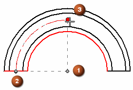

Place a centerline on a slot
-
Choose Home tab→Annotation group→Centerline .
Note:In a model, this command is also available on the PMI tab.
-
On the Centerline command bar, select the Arc centerline type.
-
From the Placement Options list, select By 2 Arcs.
-
Click the first arc, and then click a second, concentric arc.
The arc centerline appears midway between the two arcs.

-
If you select By Center Point from the Placement Options list, you can place an arc centerline by specifying a center point (1), a start point (2), and an end point (3). You can click keypoints on geometry or points in free space.

-
You can modify the sweep of an arc centerline by dragging the edit handles on the centerline. You can also cut, copy, or paste a centerline.
-
You can change the appearance of the centerline by changing its properties in the Center Line and Mark Properties dialog box. Select the centerline and then click Properties on the shortcut menu.
How do I
Automatically create centerlines and center marks in a drawing viewAutomatically remove centerlines and center marks from a drawing view
Place a center mark
Place a centerline midway between two lines
Place a center axis on a cylinder or hole feature
Example: Dimension a curved slot
Place a bolt hole circle
Learn more
Centerlines, center marks, and bolt hole circlesLook up more details
Automatic Centerlines commandAutomatic Centerlines command bar
Centerline and Center Mark Options dialog box
Center Mark command
Center Mark command bar
Centerline command
Centerline command bar
Center Line and Center Mark Properties dialog box
Bolt Hole Circle command
Bolt Hole Circle command bar
Bolt Hole Circle Properties dialog box